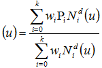

8.9.3.42 IfcRationalBSplineCurveWithKnots
| Courbes Bsplines rationnelles avec nœuds |
| Rationale Bézier-Spline - Kurve mit Kontrollpunkten |
A rational B-spline curve with knots is a B-spline curve
described in terms of control points and basic functions. It
describes weights in addition to the control points defined at the
supertype IfcBSplineCurve.
All weights shall be positive and the curve is given by:

where
| k+1 |
number of control points |
| Pi |
control points |
| wi |
weights |
| d |
degree |
NOTE Entity adapted from rational_b_spline_curve in ISO 10303-42.
HISTORY New entity in IFC4.
XSD Specification:
<xs:element name="IfcRationalBSplineCurveWithKnots" type="ifc:IfcRationalBSplineCurveWithKnots" substitutionGroup="ifc:IfcBSplineCurveWithKnots" nillable="true"/>
<xs:complexType name="IfcRationalBSplineCurveWithKnots">
<xs:complexContent>
<xs:extension base="ifc:IfcBSplineCurveWithKnots">
<xs:attribute name="WeightsData" use="optional">
<xs:simpleType>
<xs:restriction>
<xs:simpleType>
<xs:list itemType="xs:double"/>
</xs:simpleType>
<xs:minLength value="2"/>
</xs:restriction>
</xs:simpleType>
</xs:attribute>
</xs:extension>
</xs:complexContent>
</xs:complexType>
EXPRESS Specification:
|
ENTITY IfcRationalBSplineCurveWithKnots
|
|
|
| WeightsData | : | LIST [2:?] OF REAL; |
|
|
|
| Weights | : | ARRAY [0:UpperIndexOnControlPoints] OF REAL := IfcListToArray(WeightsData,0,SELF\IfcBSplineCurve.UpperIndexOnControlPoints); |
|
|
|
| SameNumOfWeightsAndPoints | : | SIZEOF(WeightsData) = SIZEOF(SELF\IfcBSplineCurve.ControlPointsList); | | WeightsGreaterZero | : | IfcCurveWeightsPositive(SELF); |
|
 EXPRESS-G diagram
EXPRESS-G diagram
Attribute Definitions:
| WeightsData | : |
The supplied values of the weights.
|
| Weights | : |
The array of weights associated with the control points. This is derived from the weights data.
|
Formal Propositions:
| SameNumOfWeightsAndPoints | : | There shall be the same number of weights as control points. |
| WeightsGreaterZero | : | All the weights shall have values greater than 0.0. |
Inheritance Graph:
|
ENTITY IfcRationalBSplineCurveWithKnots
|
|
|
| UpperIndexOnControlPoints | : | INTEGER := (SIZEOF(ControlPointsList) - 1); |
| ControlPoints | : | ARRAY [0:UpperIndexOnControlPoints] OF IfcCartesianPoint := IfcListToArray(ControlPointsList,0,UpperIndexOnControlPoints); |
|
|
|
| UpperIndexOnKnots | : | INTEGER := SIZEOF(Knots); |
|
|
|
| WeightsData | : | LIST [2:?] OF REAL; |
|
|
|
| Weights | : | ARRAY [0:UpperIndexOnControlPoints] OF REAL := IfcListToArray(WeightsData,0,SELF\IfcBSplineCurve.UpperIndexOnControlPoints); |
|
 Link to this page
Link to this page